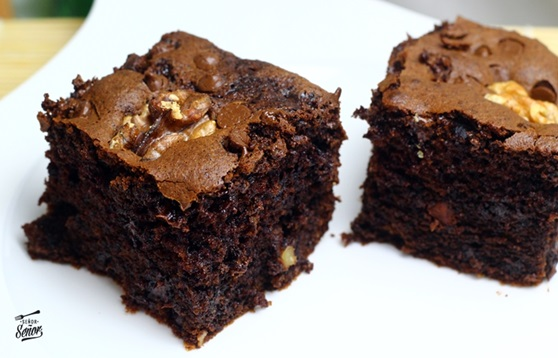

Brownie
“La vida es incierta, cómete el postre primero”
— Ernestine Ulmer

Ingredientes:
- 200 gramos de chocolate negro
- 110 gramos de mantequilla
- 4 huevos
- 120 gramos de azúcar
- 1 cucharada de esencia de vainilla
- 85 gramos de harina
- bicarbonato
- Nueces
- Pepitas de chocolate
Receta:
- En un bol ponemos el chocolate y la mantequilla. Lo hacemos al baño maria para que se vaya derritiendo. Una vez derretido lo lo mezclamos muy bien.
- Ponemos los 4 huevos y el azúcar en un bol.
- Agregamos la harina y la cucharadita de bicarbonato. Mezclamos muy bien.
- Agregamos el chocolate que hemos derretido junto con la mantequilla y el toque de vainilla. Seguimos mezclando.
- Agregamos las nueces y las pepitas de chocolate.
- En un recipiente de horno ponemos un poco de mantequilla y harina para que no se nos pegue el brownie.
- Incorporamos la mezcla y cubrimos con unas pepitas y unas nueces (opcional). Introducimos al horno durante 30-35 minutos a 180º.
Información nutricional:
- Calorías
- 350-400 Kcal / 100 gramos
- Proteínas
- 4-6 gramos / 100 gramos
- Grasas
- 20-25 gramos / 100 gramos
- Grasas saturadas
- 10-12 gramos / 100 gramos
- Carbohidratos
- 40-50 gramos / 100 gramos
- Azúcares
- 25-30 gramos / 100 gramos
- Fibra
- 2-4 gramos / 100 gramos
- Sodio
- 100-200 mg / 100 gramos